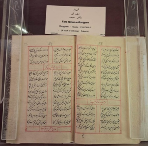

Audio Explanation:
Audio for selected language is not available.
ফার্স নামা

নস্তালিক লিপিতে রচিত কাব্যধর্মী পাণ্ডুলিপি
‘ফার্স নামা’ নস্তালিক লিপিতে রচিত একটি গুরুত্বপূর্ণ কাব্যধর্মী পাণ্ডুলিপি। গ্রন্থটি ১২১০ হিজরিতে রচিত এবং ১২৭৬ হিজরিতে এর অনুলিপি প্রস্তুত করা হয়। এর রচয়িতা সাদাত ইয়ার খান, যিনি তাঁর কবিনাম ‘রঙ্গিন’ নামে অধিক পরিচিত ছিলেন। তাঁর পিতা ইরান থেকে পাঞ্জাবে এসে বসতি স্থাপন করেন এবং লাহোরে মীর মুনাওয়ার খানের অধীনে কর্মরত ছিলেন। রঙ্গিনের জন্ম দিল্লিতে। তিনি যুদ্ধবিদ্যার বিভিন্ন শাখায় দক্ষতা অর্জন করেন এবং পরবর্তীকালে হায়দরাবাদের তোপখানা বিভাগে একজন কর্মকর্তা হিসেবে দায়িত্ব পালন করেন। এই গ্রন্থে পদ্যরীতিতে ঘোড়ার বিভিন্ন রোগ, তাদের চিকিৎসাপদ্ধতি এবং রোগ শনাক্ত করার উপায় সম্পর্কে বিস্তারিত আলোচনা করা হয়েছে।
Fars Nama
Nastaliq Poetic Manuscript
“Fars Nama” is an important poetic manuscript written in Nastaliq script. The work was composed in 1210 Hijri and copied in 1276 Hijri. Its author is Sa`adat Yar Khan, popularly known by his penname Rangin. His father migrated from Iran to Punjab and was employed under Mir Munawwar Khan in Lahore. Rangin was born in Delhi, mastered the arts of warfare, and later served as an officer in the artillery department at Hyderabad. This treatise deals in verse form, with the diseases of horses, their treatments, and the identification.
ഫാർസ് നാമ
നസ്താലിക് ലിപിയിലുള്ള കാവ്യ കൈയെഴുത്തുപ്രതി
നസ്താലിക് ലിപിയിൽ എഴുതിയ ഒരു പ്രധാന കാവ്യ കൈയെഴുത്തുപ്രതിയാണ് "ഫാർസ് നാമ". 1210 ഹിജ് റിയിൽ രചിച്ച ഈ കൃതി 1276 ഹിജ്റിയിൽ പകർത്തിയതാണ്. ഇതിന്റെ രചയിതാവ് 'രംഗീൻ' എന്ന കാവ്യനാമത്തിൽ അറിയപ്പെടുന്ന സാദത് യാർ ഖാൻ ആണ്. അദ്ദേഹത്തിന്റെ പിതാവ് ഇറാനിൽ നിന്ന് പഞ്ചാബിലേക്ക് കുടിയേറുകയും ലാഹോറിൽ മിർ മുനവർ ഖാന്റെ കീഴിൽ ജോലി ചെയ്യുകയും ചെയ്തു. ഡൽഹിയിൽ ജനിച്ച റംഗിൻ യുദ്ധകലയിൽ പ്രാവീണ്യം നേടി, പിന്നീട് ഹൈദരാബാദിലെ പീരങ്കി വകുപ്പിൽ ഉദ്യോഗസ്ഥനായി സേവനമനുഷ്ഠിച്ചു. ഈ ഗ്രന്ഥം പദ്യരൂപത്തിൽ കുതിരകളുടെ രോഗങ്ങൾ, അവയുടെ ചികിത്സകൾ, തിരിച്ചറിയൽ എന്നിവ കൈകാര്യം ചെയ്യുന്നു.
فارس نامہ
نستعلیق رسم الخط میں تحریر شدہ منظوم مخطوطہ
فارس نامہ ایک اہم شاعرانہ مخطوطہ ہے جو نستعلیق رسم الخط میں تحریر کیا گیا ہے۔ یہ تصنیف 1210 ہجری میں لکھی گئی تھی اور اس کی نقل 1276 ہجری میں تیار کی گئی۔ اس کے مصنف سعادت یار خان تھے، جو اپنے قلمی نام رنگین سے مشہور تھے۔ ان کے والد ایران سے پنجاب ہجرت کر آئے تھے اور لاہور میں میر منور خان کے ماتحت ملازمت کرتے تھے۔ رنگین دہلی میں پیدا ہوئے۔ انہوں نے جنگی فنون میں مہارت حاصل کی اور بعد میں حیدرآباد کے توپ خانے کے محکمے میں افسر کی حیثیت سے خدمات انجام دیں۔ یہ تصنیف گھوڑوں کی بیماریوں، ان کی شناخت اور علاج سے متعلق ہے اور اسے شعری انداز میں پیش کیا گیا ہے۔
ફારસ નામા
નાસ્તલીક લિપિમાં કાવ્યાત્મક હસ્તપ્રત
ફારસ નામા"ફારસ નામા" એ નાસ્તલીક લિપિમાં લખાયેલી એક મહત્વપૂર્ણ કાવ્યાત્મક હસ્તપ્રત છે. આ કૃતિ ૧૨૧૦ હિજરીમાં રચાઈ હતી અને ૧૨૭૬ હિજરીમાં તેની નકલ કરવામાં આવી હતી. તેના લેખક સાઅદત યાર ખાન છે, જેઓ તેમના તખ્ખુસ (કાવ્યિક ઉપનામ) 'રંગીન' થી ખૂબ પ્રખ્યાત છે. તેમના પિતા ઈરાનથી પંજાબ સ્થળાંતર કરીને આવ્યા હતા અને લાહોરમાં મીર મુનવ્વર ખાનના તાબામાં નોકરી કરતા હતા. રંગીનનો જન્મ દિલ્હીમાં થયો હતો, તેમણે યુદ્ધ કળામાં નિપુણતા મેળવી હતી અને પાછળથી હૈદરાબાદમાં આર્ટિલરી (તોપખાના) વિભાગમાં અધિકારી તરીકે સેવા આપી હતી. આ ગ્રંથ પદ્ય સ્વરૂપમાં (કાવ્યરૂપે) ઘોડાના રોગો, તેમની સારવાર અને તેમની ઓળખ વિશે ચર્ચા કરે છે.
ஃபார்ஸ் நாமா
நஸ்தஅலீக் எழுத்துமுறை கவிதை வடிவம்
“ஃபார்ஸ் நாமா” என்பது நஸ்தஅலீக் எழுத்துமுறையில் எழுதப்பட்ட முக்கியமான கவிதை வடிவக் கையெழுத்துப் பிரதியாகும். இந்நூல் ஹிஜ்ரி 1,210 இல் இயற்றப்பட்டு ஹிஜ்ரி 1,276 இல் நகலெடுக்கப்பட்டது. இதன் ஆசிரியர் சஆதத் யார் கான். இவர் “ரங்கீன்” என்ற புனைப்பெயரால் பிரபலமாக அறியப்பட்டவர். இவரது தந்தை ஈரானிலிருந்து பஞ்சாபிற்கு குடிபெயர்ந்து, லாகூரில் மிர் முனவ்வர் கானின் கீழ் பணியாற்றினார். ரங்கீன் டெல்லியில் பிறந்தார். போர்க்கலைகளில் தேர்ச்சி பெற்ற அவர், பின்னர் ஹைதராபாத்தில் பீரங்கிப் படைப்பிரிவில் அதிகாரியாகப் பணியாற்றினார். இந்நூல் குதிரைகளின் நோய்கள், அவற்றுக்கான சிகிச்சைகள் மற்றும் நோய்களை அடையாளம் காணும் முறைகள் குறித்து செய்யுள் வடிவில் விளக்குகிறது.
ಫಾರ್ಸ್ ನಾಮಾ
ನಸ್ತಲಿಕ್ ಲಿಪಿಯ ಕಾವ್ಯಾತ್ಮಕ ಹಸ್ತಪ್ರತಿ
"ಫಾರ್ಸ್ ನಾಮಾ" ನಸ್ತಲಿಕ್ ಲಿಪಿಯಲ್ಲಿ ಬರೆಯಲಾದ ಒಂದು ಪ್ರಮುಖ ಕಾವ್ಯಾತ್ಮಕ ಹಸ್ತಪ್ರತಿಯಾಗಿದೆ. ಈ ಕೃತಿಯನ್ನು 1210 ಹಿಜ್ರಿಯಲ್ಲಿ ರಚಿಸಲಾಯಿತು ಮತ್ತು 1276 ಹಿಜ್ರಿಯಲ್ಲಿ ನಕಲು ಮಾಡಲಾಯಿತು. ಇದರ ಲೇಖಕರು ಸಾದತ್ ಯಾರ್ ಖಾನ್, ಇವರು ತಮ್ಮ 'ರಂಗೀನ್' ಎಂಬ ಕಾವ್ಯನಾಮದಿಂದ ಜನಪ್ರಿಯರಾಗಿದ್ದಾರೆ. ಇವರ ತಂದೆ ಇರಾನ್ನಿಂದ ಪಂಜಾಬ್ಗೆ ವಲಸೆ ಬಂದಿದ್ದರು ಮತ್ತು ಲಾಹೋರ್ನಲ್ಲಿ ಮೀರ್ ಮುನವ್ವರ್ ಖಾನ್ ಅವರ ಅಡಿಯಲ್ಲಿ ಉದ್ಯೋಗದಲ್ಲಿದ್ದರು. ರಂಗೀನ್ ದೆಹಲಿಯಲ್ಲಿ ಜನಿಸಿದರು, ಯುದ್ಧ ಕಲೆಗಳಲ್ಲಿ ಪ್ರಾವೀಣ್ಯತೆ ಸಾಧಿಸಿದರು ಮತ್ತು ನಂತರ ಹೈದರಾಬಾದ್ನ ಫಿರಂಗಿ ದಳದ ವಿಭಾಗದಲ್ಲಿ ಅಧಿಕಾರಿಯಾಗಿ ಸೇವೆ ಸಲ್ಲಿಸಿದರು. ಕಾವ್ಯ ರೂಪದಲ್ಲಿರುವ ಈ ಪ್ರಬಂಧವು ಕುದುರೆಗಳ ರೋಗಗಳು, ಅವುಗಳ ಚಿಕಿತ್ಸೆಗಳು ಮತ್ತು ಅವುಗಳ ಗುರುತಿಸುವಿಕೆಯ ಬಗ್ಗೆ ವ್ಯವಹರಿಸುತ್ತದೆ.
ఫరస్ నామా
నస్తలీఖ్ లిపిలోని పద్య ప్రతి
"ఫరస్ నామా" అనేది నస్తలీఖ్ లిపిలో పద్యరూపంలో రాయబడిన ఒక ముఖ్యమైన లిఖిత ప్రతి. ఈ గ్రంథం హిజ్రీ 1210లో రచించబడగా, హిజ్రీ 1276లో ప్రతిలిపి చేయబడింది. దీని రచయిత సఆదత్ యార్ ఖాన్; ఈయన తన కలం పేరు 'రంగీన్'గా సుప్రసిద్ధుడు. ఈయన తండ్రి ఇరాన్ నుండి పంజాబ్కు వలస వచ్చి, లాహోర్లోని మీర్ మునవ్వర్ ఖాన్ వద్ద ఉద్యోగం చేశారు. ఢిల్లీలో జన్మించిన రంగీన్, యుద్ధ విద్యలలో ప్రావీణ్యం సంపాదించి, ఆ తర్వాత హైదరాబాద్ సంస్థానంలో ఫిరంగుల విభాగంలో (ఆర్టిలరీ) అధికారిగా సేవలందించారు. ఈ పద్య గ్రంథం గుర్రాల జాతులను గుర్తించడం, వాటికి వచ్చే వివిధ వ్యాధులు మరియు వాటి చికిత్సా విధానాలను సమగ్రంగా వివరిస్తుంది.
ଫାର୍ସ୍ ନାମା
ନସ୍ତାଲିକ ଲିପିରେ କାବ୍ୟ ପାଣ୍ଡୁଲିପି
"ଫାର୍ସ୍ ନାମା" ହେଉଛି ନସ୍ତାଲିକ ଲିପିରେ ଲିଖିତ ଏକ ଗୁରୁତ୍ୱପୂର୍ଣ୍ଣ କାବ୍ୟ ପାଣ୍ଡୁଲିପି। ଏହି ରଚନାଟି 1210 ହିଜରୀରେ ରଚିତ ହୋଇଥିଲା ଏବଂ ଏହାର ପ୍ରତିଲିପି 1276 ହିଜରୀରେ କରାଯାଇଥିଲା। ଏହାର ଲେଖକ ହେଉଛନ୍ତି ସାଦତ ୟାର୍ ଖାନ୍, ଯିଏ ତାଙ୍କ ଛଦ୍ମନାମ ରଙ୍ଗିନ୍ ନାମରେ ଜଣାଶୁଣା। ତାଙ୍କ ପିତା ଇରାନରୁ ପଞ୍ଜାବକୁ ସ୍ଥାନାନ୍ତରିତ ହୋଇଥିଲେ ଏବଂ ଲାହୋରରେ ମୀର ମୁନାୱାର ଖାନଙ୍କ ଅଧୀନରେ କାର୍ଯ୍ୟ କରୁଥିଲେ। ରଙ୍ଗିନ ଦିଲ୍ଲୀରେ ଜନ୍ମଗ୍ରହଣ କରିଥିଲେ, ଯୁଦ୍ଧ କଳାରେ ଦକ୍ଷତା ହାସଲ କରି ହାଇଦ୍ରାବାଦର ତୋପଖାନା ବିଭାଗରେ ଜଣେ ଅଧିକାରୀ ଭାବରେ କାର୍ଯ୍ୟ କରିଥିଲେ। ଏହି ଗ୍ରନ୍ଥଟି ଶ୍ଳୋକ ଆକାରରେ, ଘୋଡାର ରୋଗ, ସେଗୁଡ଼ିକର ଚିକିତ୍ସା ଏବଂ ଚିହ୍ନଟ ସହିତ ଜଡିତ।
फ़ारस नामा
नस्तालीक़ लिपि में काव्यात्मक पांडुलिपि
“फ़ारस नामा” नस्तालीक़ लिपि में लिखी गई एक महत्वपूर्ण काव्यात्मक पांडुलिपि है। इस रचना की रचना 1210 हिजरी में की गई थी और इसकी प्रतिलिपि 1276 हिजरी में तैयार की गई। इसके लेखक सआदत यार ख़ान हैं, जो अपने उपनाम ‘रंगीन’ के नाम से प्रसिद्ध थे। उनके पिता ईरान से पंजाब आए थे और लाहौर में मीर मुन्नवर ख़ान के अधीन कार्यरत थे। रंगीन का जन्म दिल्ली में हुआ था। उन्होंने युद्ध-कला में दक्षता प्राप्त की और बाद में हैदराबाद में तोपखाना विभाग में एक अधिकारी के रूप में सेवा की। यह ग्रंथ पद्य रूप में घोड़ों के रोगों, उनके उपचार तथा रोगों की पहचान से संबंधित विषयों का वर्णन करता है।
फारस नामा
नस्तालिक लिपीतील काव्यात्मक हस्तलिखित
"फार्स नामा" हे नस्तालिक लिपीत लिहिलेले एक महत्त्वाचे काव्यात्मक हस्तलिखित आहे. या ग्रंथाची रचना 1210 हिजरी मध्ये झाली आणि 1276 हिजरी मध्ये त्याची प्रत तयार करण्यात आली. याचे लेखक सआदत यार खान हे आहेत, जे 'रंगीन' या टोपणनावाने लोकप्रिय होते. त्यांचे वडील इराणमधून पंजाबमध्ये स्थलांतरित झाले आणि लाहोरमध्ये मीर मुनव्वर खान यांच्याकडे नोकरीस होते. रंगीन यांचा जन्म दिल्लीत झाला, त्यांनी युद्धकलेत प्राविण्य मिळवले आणि नंतर हैदराबाद येथे तोफखाना विभागात अधिकारी म्हणून काम केले. पद्य स्वरूपातील हा ग्रंथ घोड्यांचे आजार, त्यांवरील उपचार आणि त्यांची ओळख याविषयी माहिती देतो.